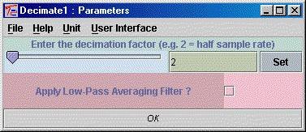

Input Types : SampleSet
Output Types : SampleSet
Date : 01 Mar 2001
The unit called Decimate is a time-domain decimation routine which can be used to resample
the data to a sub-multiple sampling rate. The user can chose whether to reduce the number of
samples by a factor 2,3,4,5 etc. The resultant sample number must be divisable by the original
sampling rate. For example, an 8 kHz sampling rate can be reduced by 2 to 4kHz (by taking
every other sample) but cannot be reduced by a factor of 3. This would leave 2666.66 samples
left in the data set which would lead to unpredictable results. However a factor of
4 (to 2kHz) and 8 (to 1 kHz) etc are all vaild reductions in sampling rates.
The user can also choose to apply a low-pass filter to the data before the routine is decimated. This will reduce the effects of aliasing when resampling the data set. The low-pass filter is a simple averaging type which averages adjacent samples. This has a gradual roll-off and may not be suitable for critical signals. There are several much better filters within the Algorithms toolbox which can perform much better filtering in the frequency domain.
Decimate's parameter window (double-click on the unit while holding down the Control key) is used to set the decimation factor and whether a low-pass averaging filter should be applied to the signal.

For example, here the user is decimating by a factor of 2 (halving the sampling rate) and not applying a low-pass averaging filter.